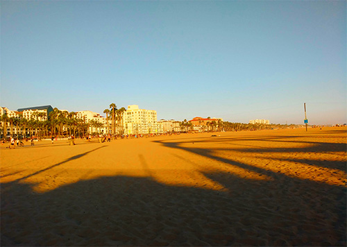
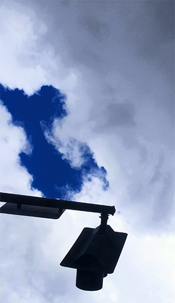
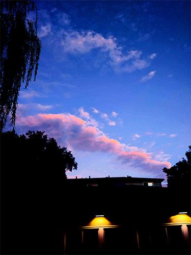
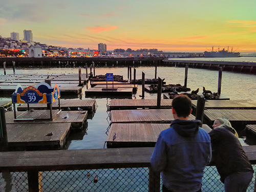
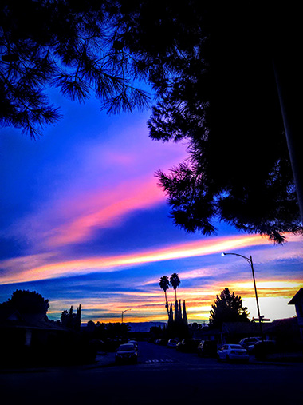
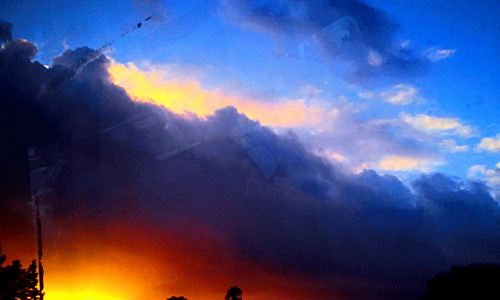
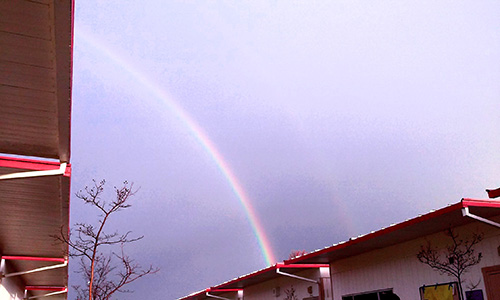
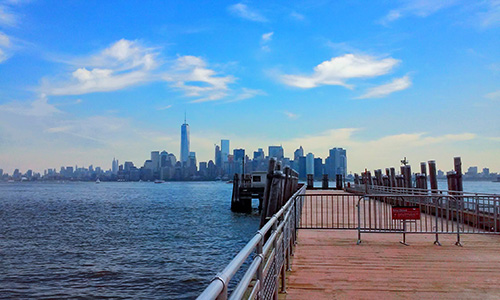
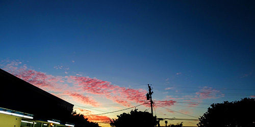

The Sky
This page is dedicated to images I've taken of the sky. I'm really fascinated
by the different colors that can come from the sky depending on the clouds and
the sun. There can be a mixture of blues, blacks, greys, even pinks and purples!
My favorite type of skies are the ones with yellow and orange colors, because
when editting the images and playing around with the saturation level, it can
create a brighter orange and even make it look red, as if the sky is on fire.
These are some of the best 'sky-themed' photographs that I've taken and the
majority of these are some of my favorites.








